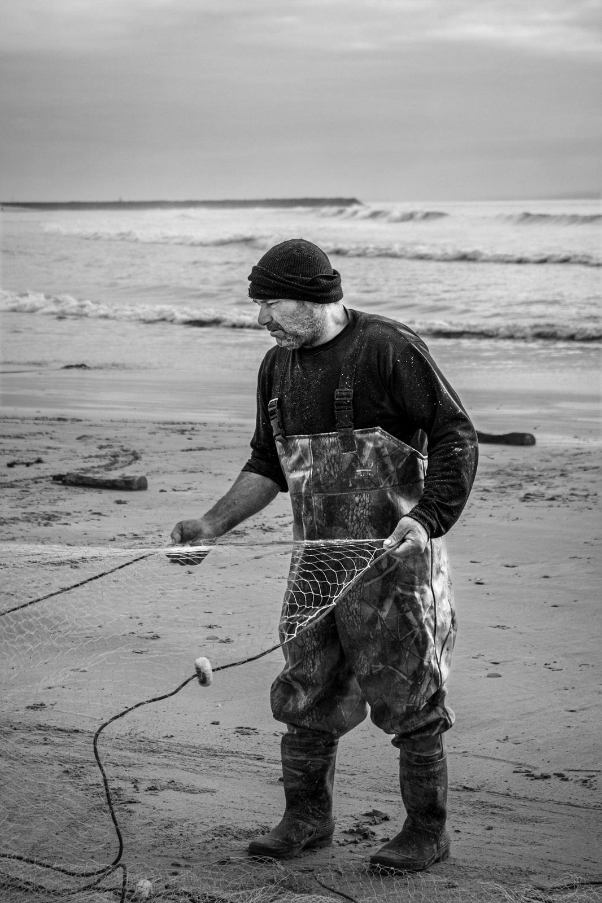
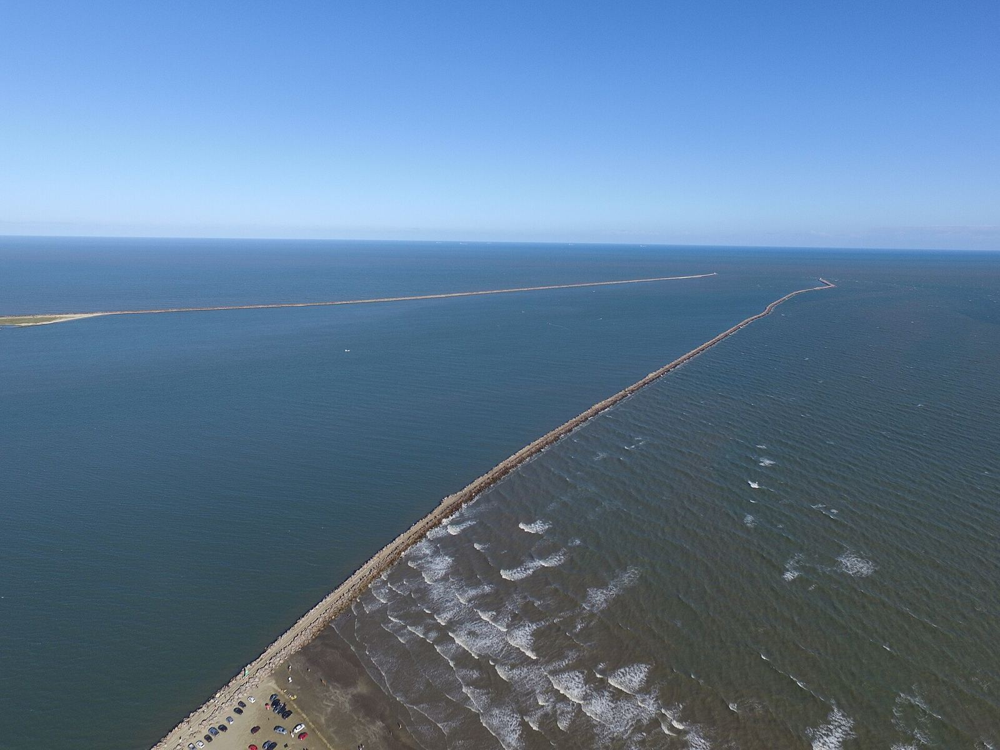

Peixaria de bairro em Rio Grande. O cardápio muda com a pesca: escolha, confira a comanda e mande o pedido pronto.
Ver o cardápioHorários abaixo
O que a rede trouxe esta semana, com preço por quilo ou por unidade.
Peixe vendido por quilo sai em múltiplos de meio quilo; a balança acerta a diferença na hora, e a peixaria avisa antes se der mais. Item esgotado volta quando a pesca deixa.

Tudo o que você escolheu aparece aqui, com a conta feita. Confira, diga se é retirada ou entrega e mande pelo WhatsApp. A mensagem já vai escrita.

Lanço é o nome de cada vez que a rede vai à água e volta. Tem lanço cheio e tem lanço fraco. Por isso o nosso cardápio muda: o que está nele hoje é o que a lagoa e o mar deram nesta semana.
A gente compra dos barcos que descarregam no cais, limpa aqui mesmo e vende no mesmo dia. Você escolhe se quer inteiro, em posta ou em filé, e não paga a mais por isso.
Quando o camarão da lagoa sai de safra, ele sai do cardápio também. A gente prefere avisar que acabou a vender outro no lugar sem dizer.
Faz o pedido pelo WhatsApp que a gente separa, limpa e avisa quando está pronto.
Nilo e Cidapersonagens do projeto de demonstração
Depende do bairro. O pedido mínimo para entrega é R$ 40,00; na retirada não tem mínimo.
Sim, sem custo. Escreva na observação da comanda se quer inteiro escamado, em posta ou em filé.
Não. O site só monta o pedido. Você paga na entrega ou na retirada, com Pix, cartão ou dinheiro. Se escolher Pix, a chave vem na resposta do WhatsApp.
Ainda não. Ele é confirmado quando a peixaria responde no WhatsApp com o horário de entrega ou de retirada. Se algum item tiver acabado, avisamos antes de separar.
Fale com a gente no WhatsApp em até 2 horas depois de receber. Item errado, faltando ou fora do ponto: trocamos ou devolvemos o valor daquele item.
O camarão-rosa da Lagoa dos Patos tem época de pesca no começo do ano. Fora dela, ele fica no cardápio marcado como esgotado, para você saber quando volta.
Rio Grande/RS